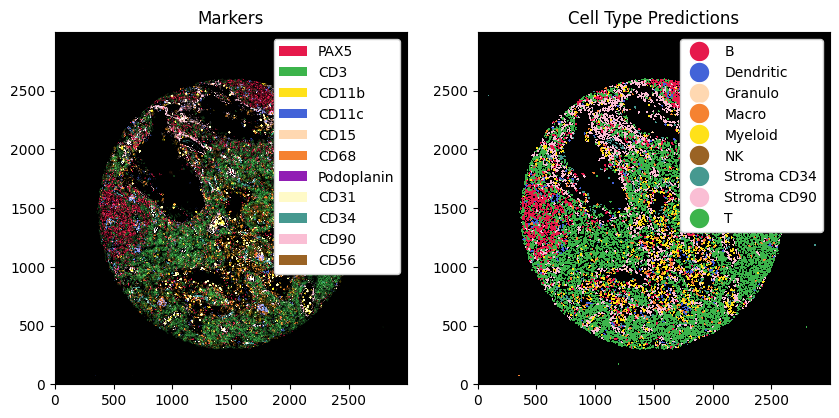

Cell Type Prediction
There are different ways to predict cell types, e. g. using astir or argmax. Here, we demonstrate how to filter data and then use argmax to get a quick initial prediction.
[1]:
%reload_ext autoreload
%autoreload 2
[2]:
import spatial_data
import pandas as pd
import matplotlib.pyplot as plt
import xarray as xr
xr.set_options(display_style='text')
[2]:
<xarray.core.options.set_options at 0x7fffd5f5f9d0>
[3]:
ds = xr.load_dataset('/g/huber/projects/CITEseq/CODEX/BNHL_TMA/bhnl_labeled_zarr/166_4_I2_LK_labeled.zarr')
/home/meyerben/meyerben/.conda/envs/spatialproteomics_env/lib/python3.9/site-packages/xarray/backends/plugins.py:159: RuntimeWarning: 'netcdf4' fails while guessing
warnings.warn(f"{engine!r} fails while guessing", RuntimeWarning)
/home/meyerben/meyerben/.conda/envs/spatialproteomics_env/lib/python3.9/site-packages/xarray/backends/plugins.py:159: RuntimeWarning: 'scipy' fails while guessing
warnings.warn(f"{engine!r} fails while guessing", RuntimeWarning)
[4]:
# preprocessing: filtering by percentiles and applying a median filter
# can specify channel specific quanitle thresholds here (or even sample specific thresholds)
ct_dict = {
"B": dict(channel = 'PAX5', quantile = .8, color=spatial_data.Red),
"T": dict(channel = 'CD3', quantile = .5, color=spatial_data.Green),
"Myeloid": dict(channel = 'CD11b', quantile = .8, color=spatial_data.Yellow),
"Dendritic": dict(channel = 'CD11c', quantile = .8, color=spatial_data.Blue),
"Granulo": dict(channel = 'CD15', quantile = .8, color=spatial_data.Apricot),
"Macro": dict(channel = 'CD68', quantile = .8, color=spatial_data.Orange),
"Stroma PDPN": dict(channel = 'Podoplanin', quantile = .95, color=spatial_data.Purple),
"Stroma CD31": dict(channel = 'CD31', quantile = .95, color=spatial_data.Beige),
"Stroma CD34": dict(channel = 'CD34', quantile = .95, color=spatial_data.Teal),
"Stroma CD90": dict(channel = 'CD90', quantile = .95, color=spatial_data.Pink),
"NK": dict(channel = 'CD56', quantile = .8, color=spatial_data.Brown),
}
channels = [ v['channel'] for k, v in ct_dict.items()]
quantiles = [ v['quantile'] for k, v in ct_dict.items()]
colors = [ v['color'] for k, v in ct_dict.items()]
ds_processed = ds.pp[channels].pp.filter(quantiles).pp.restore('medfilt2d', kernel_size=3)
[5]:
# plotting the ds and ds processed next to one another
# visualizing the raw vs the processed image
fig, ax = plt.subplots(1, 2, figsize=(10, 5))
_ = ds.pp[channels].pl.colorize(colors).pl.imshow(legend_background=True, ax=ax[0])
_ = ds_processed.pp[channels].pl.colorize(colors).pl.imshow(legend_background=True, ax=ax[1])
ax[0].set_title("Raw")
ax[1].set_title("Processed")
[5]:
Text(0.5, 1.0, 'Processed')

[6]:
ct_marker_dict = dict(zip(ct_dict.keys(), channels))
ct_marker_dict
/g/huber/users/meyerben/notebooks/codex_analysis/2024-03-18_spatialproteomics_package/spatial-data/spatial_data/la/label.py:13: AccessorRegistrationWarning: registration of accessor <class 'spatial_data.la.label.LabelAccessor'> under name 'la' for type <class 'xarray.core.dataset.Dataset'> is overriding a preexisting attribute with the same name.
class LabelAccessor:
/g/huber/users/meyerben/notebooks/codex_analysis/2024-03-18_spatialproteomics_package/spatial-data/spatial_data/pp/preprocessing.py:27: AccessorRegistrationWarning: registration of accessor <class 'spatial_data.pp.preprocessing.PreprocessingAccessor'> under name 'pp' for type <class 'xarray.core.dataset.Dataset'> is overriding a preexisting attribute with the same name.
class PreprocessingAccessor:
[6]:
{'B': 'PAX5',
'T': 'CD3',
'Myeloid': 'CD11b',
'Dendritic': 'CD11c',
'Granulo': 'CD15',
'Macro': 'CD68',
'Stroma PDPN': 'Podoplanin',
'Stroma CD31': 'CD31',
'Stroma CD34': 'CD34',
'Stroma CD90': 'CD90',
'NK': 'CD56'}
[9]:
# predicting the cell type using the argmay
ds_with_ct_predictions = ds_processed.la.predict_cell_types_argmax(ct_marker_dict, key='_arcsinh_mean', overwrite_existing_labels=True)
# adding colors to match the markers
ct_color_dict = dict(zip(ct_dict.keys(), colors))
for k, v in ct_color_dict.items():
ds_with_ct_predictions = ds_with_ct_predictions.la.set_label_color(k, v)
/g/huber/users/meyerben/notebooks/codex_analysis/2024-03-18_spatialproteomics_package/spatial-data/spatial_data/la/label.py:13: AccessorRegistrationWarning: registration of accessor <class 'spatial_data.la.label.LabelAccessor'> under name 'la' for type <class 'xarray.core.dataset.Dataset'> is overriding a preexisting attribute with the same name.
class LabelAccessor:
Did not find Stroma PDPN.
Did not find Stroma CD31.
[10]:
# plotting the ct predictions next to the processed image
fig, ax = plt.subplots(1, 2, figsize=(10, 5))
_ = ds_with_ct_predictions.pp[channels].pl.colorize(colors).pl.imshow(legend_background=True, ax=ax[0])
_ = ds_with_ct_predictions.pl.imshow(render_intensities=False, render_labels=True, legend_label=True, ax=ax[1])
ax[0].set_title("Markers")
ax[1].set_title("Cell Type Predictions")
[10]:
Text(0.5, 1.0, 'Cell Type Predictions')
